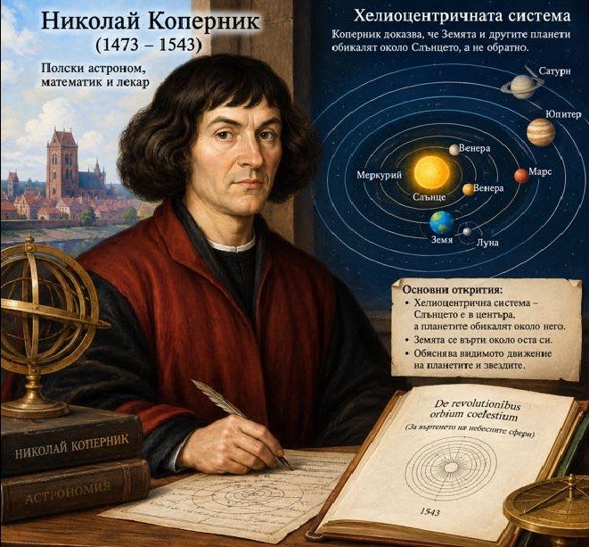
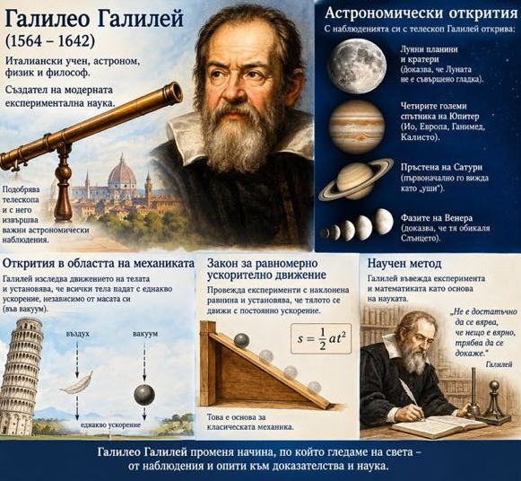
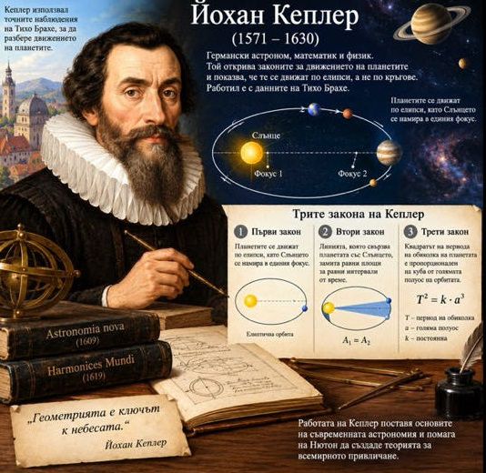
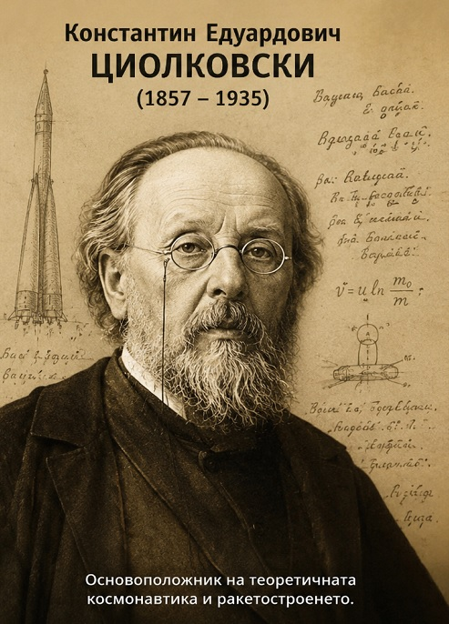

Развитие на астрономията
Хелиоцентрична система

Коперник е полски астроном. Той е създател на хелиоцентричната система за света, реформатор на астрономията. Той е изучавал подробно древната астрономия и по-специално "Алмагеста" на Птолемей, където е изложена геоцентричната система за света. Той оценява по достойнство достиженията на античната астрономия, но се убеждава в нейната несъстоятелност. Закономерностите в движенията на планетите, в техните прави и обратни движения (т. нар. примки), изглеждащи преди много загадъчни, получават ясни обяснения в теориите на Коперник.
Научна методика

Великият италиански учен Галилео Галилей, който може би е най-големият - родоначалника на научната методика, е роден в град Пиза. Като младеж учи в университета на родния си град, но по финансови причини напуска. Въпреки това в 1589 г. успява да получи преподавателско място в този университет.
Първите си съществени успехи той постига в механиката. Галилей подлага на съмнение учението на Аристотел, че тежките тела падат по-бързо. Той доказва, че телата падат с една и съща скорост, ако не се смята въздействието на въздуха. Обосновава идеята за относителността на движението, открива закона за инерцията, за свободното падане на телата, за люлеенето на махалото.
С построения телескоп с 32-кратно увеличение, открива лунните планини и кратери, 4 спътника на Юпитер, фазите на Венера, слънчевите петна, звездния строеж на Млечния път.
Небесна механика

Законите за движението на планетите дължим на Йохан Кеплер, основоположник на небесната механика, но значението му е още по-голямо, защото изиграва ключова роля за успеха на революцията, настъпила в астрономията в началото на 17-т век. Хелиоцентричната система, предложена от Коперник през 1643 година, половин век по-късно се потвърждава от откритието на Галилео Галилей.
Йoхан Кеплер е роден на 27 декември 1571 година във Вайл, градче в бившата германска провинция Вюртенберг. Баща му, доста ексцентрична личност, е войник. Кеплер е болнаво дете, а след съзряването си е хипохондрик. Постъпва в Тюбингенския университет, където е ученик на Михаел Местлин, убеден привърженик на Коперник.
Реактивен двигател

Циолковски е руски учен и философ от полски произход. Роден е 1857 г. в село Ижевское до град Рязан. На девет години Костя се разболява от скарлатина. В резултат на усложненията, настъпили след болестта, той губи част от слуха си. Трудното чуване лишава момчето от много детски забави и впечатления.
През 1869 година той постъпва в гимназия. Бъдещият учен не блести с големи успехи. Предметите са били много, и на полуглухото момче не е било леко да се учи. Отгоре на всичко заради пакости неведнъж е попадал в карцера.
В 1871 година баща му го изпраща в Москва — там той усвоява Физиката, диференциалното и интегрално смятане и други науки. През 1892 година Константин Циолковски е назначен за учител в Калуга. Там той построява аеродинамичен тунел, който му позволява да измерва различни аеродинамични показатели на изследваните обекти.
През 1895 година е публикувана книгата му "Мечти за земята и небето", а след още една година излиза и статията за другите светове, разумни същества от други планети и за общуването на земляните с тях. В същата 1896 година Циолковски започва с писането на своя главен труд "Изследване на космическото пространство с помощта на реактивния двигател". В тази книга са засегнати проблемите по използването на ракетите.